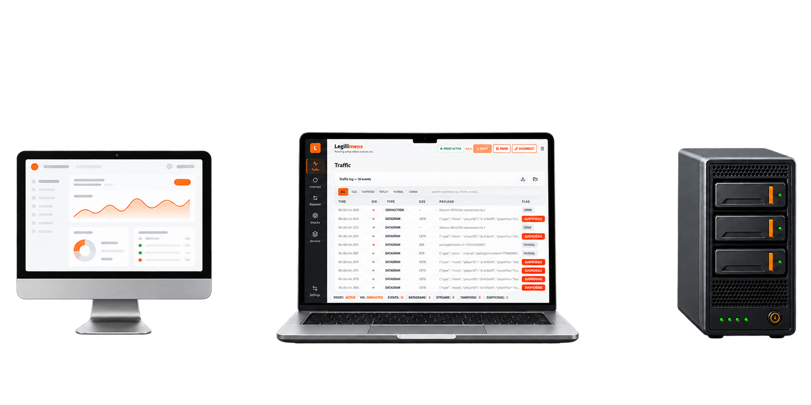
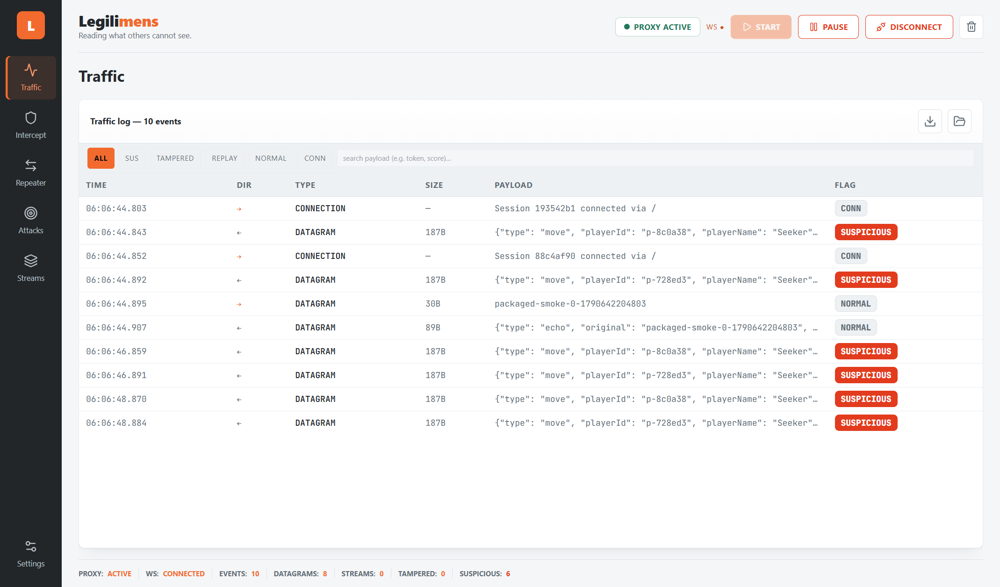

Recommended
Legilimens
A closer look at your WebTransport traffic.
- QUIC
- HTTP/3
- UDP
Inspect payloads. Test changes. Understand how your application responds.
Traffic5 events
ALLSUSTAMPEREDCONN
| 03.038 | → | DGRAM | {"playerName":"Seeker","score":120} | NORMAL |
| 03.041 | ← | DGRAM | {"type":"heartbeat","token":"eyJhbGci… | SUS |
| 03.112 | → | STREAM | {"playerName":"Seeker","score":99999} | TAMPERED |
| 03.206 | ← | DGRAM | {"type":"echo","original":"ping"} | NORMAL |
| 03.310 | ⇄ | CONN | session 7f3a… established | CONN |
Intercept1 held
{
"playerName": "Seeker",
"score": 99999,
"level": 7
}
ForwardEditDrop
Repeatersession 7f3a · :4434
Request → server
{"type":"ping",
"nonce":"a91c"}
Response
{"type":"echo",
"original":"ping"}
Send datagramqueued ✓
- Datagrams
- Streams
- Certificate-hash connection setup
Capture datagrams and stream chunks from clients configured to connect through Legilimens.
why it
exists
Real-time applications exchange data through WebTransport datagrams and streams. Seeing those messages helps you investigate unexpected behavior and test how your application handles different inputs.
Legilimens runs locally between your configured client and upstream server. Inspect captured payloads, apply conditional JSON changes, hold datagrams for review, and replay text datagrams through a selected session. You control the client connection and certificate trust setup.


what's
inside
A focused workspace for inspecting and testing WebTransport applications. Capture traffic, review payloads, and try controlled changes in your local test environment.
-
Inspect captured datagrams and stream chunks. Filter by event flag and search payload text to find the messages that matter.
-
Replace a JSON field, optionally only when another field matches. For example, change
scoreonly forplayerName = Seeker. Modification requires complete JSON within a single datagram or stream chunk. -
Hold a datagram for review, edit its payload, then forward or drop it. Configure the direction and timeout for your test.
-
Edit and resend a text datagram through a selected live session, toward the server or client. Binary and stream replay are not supported.
-
Export retained traffic to a versioned JSON file and reopen it in a read-only offline view. Captures may contain sensitive payloads.
-
Start with the vulnerable target bundled with the desktop app. The source repository also includes five practice applications with documented scenarios.
download
Free and open source. A Windows desktop build bundles the backend and its own Chromium — no Python, Node or terminal needed.
Research preview for Windows x64. The installer is unsigned, so your browser or Windows may display a warning. Ports 4433–4436 must be available. See release notes for checksums, setup details and known limitations.
- 01
Launch
Open Legilimens and choose your upstream target in Connection settings.
- 02
Connect your client
Point your test client at the local proxy and configure it to trust the certificate hash shown in the app.
- 03
Inspect and test
Start capture, inspect payloads, and use the supported modification and replay tools to test your application's behavior.
Only read what you're allowed to read.
Use Legilimens with applications and systems you own or have explicit permission to test. Client connection and certificate trust must be configured for the proxy.